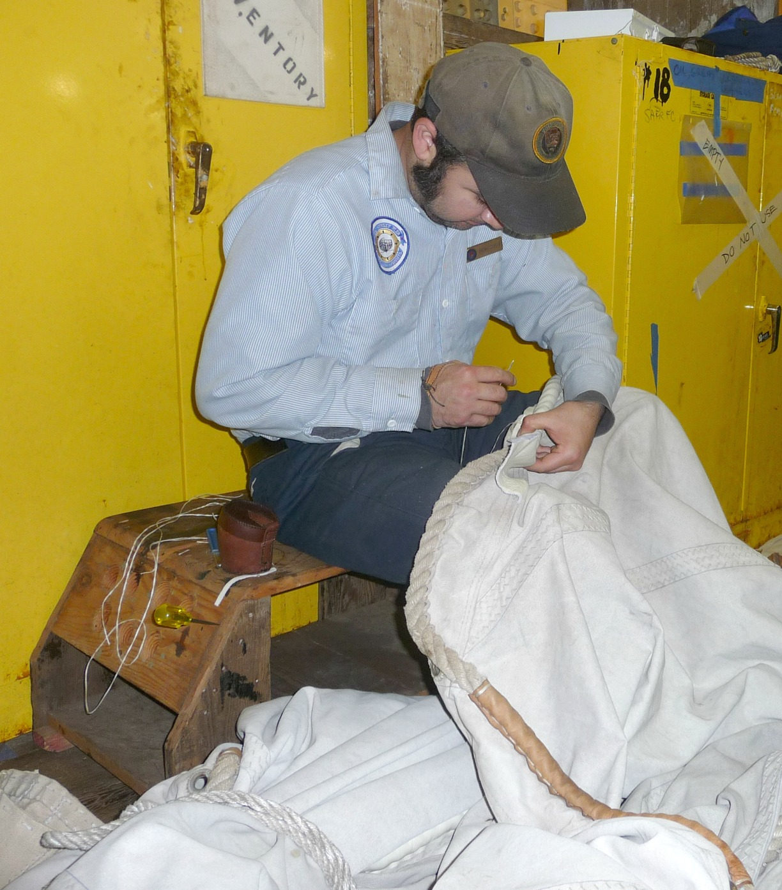
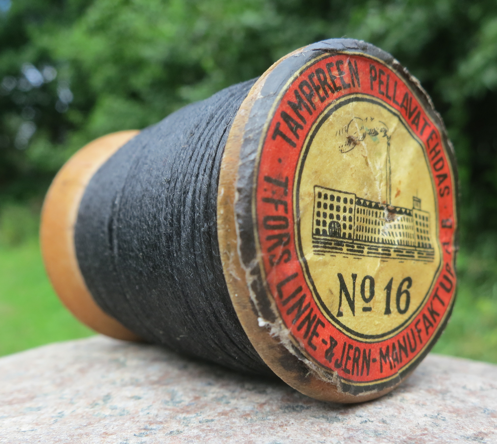

1. The Mechanical Failure Mode of Industrial Lockstitching on High-Density Leathers
In modern mass-market luxury goods manufacturing, mechanized sewing machines dominate production. A standard sewing machine operates on the lockstitch principle, invented during the industrial revolution. A lockstitch employs two independent spools: an upper needle thread and a lower bobbin thread. As the machine needle pierces the leather, it pushes a loop of upper thread downward; a revolving rotary hook catches this loop and wraps it around the bobbin thread, pulling the intertwining knot into the interior channel of the hide.
While rapid and cost-effective for thin garments or pliable upholstery fabrics, the lockstitch is mechanically catastrophic when applied to dense equine shell cordovan. Because shell cordovan has an exceptionally compact collagen matrix, machine needles must punch circular holes under brute mechanical force, pulverizing and severing the continuous collagen strands. Even more destructively, the lockstitch knot sits trapped inside this channel. Under repeated dynamic tension, the synthetic polyester threads act as miniature high-speed abrasive wire saws, grinding against the internal leather walls until the perimeter seam tears out in a catastrophic zipper effect.
Furthermore, if a single stitch in a machine lockstitched seam suffers abrasion or snaps from wear, the entire seam loses its foundational tension. The upper and lower threads unravel instantaneously along the entire edge of the bag, dumping tension and causing total gusset separation.
2. The Diamond-Prick Awl: Precision Slitting vs Destructive Hole Punching
Traditional European saddlecraft, preserved in its purest form at our 181 Mercer Street workshop, rejects circular hole punching in favor of diamond-section diamond awls (alêne losange). When preparing a cordovan clutch panel for assembly, the artisan first scribes an exact perimeter border using a polished brass screw-creaser heated gently over an gentle bench spirit lamp. A pricking iron is then tapped with a balanced boxwood mallet to mark exact stitch intervals—calibrated strictly to eight or nine stitches per imperial inch (SPI).
Each hole is not punched out with core removal; rather, it is pierced in real time by the master craftsman wielding a razor-sharp diamond awl while the leather panels are secured in a hand-carved wooden stitching pony. The diamond cross-section of the awl blade enters the leather at a precise 45-degree angle. Instead of amputating collagen bundles, the sharp diamond facet separates the fibers laterally along their natural grain axis, creating a slender, diagonal slit without extracting material.
Once the needles and waxed linen cord pass through this diamond slit, the natural elasticity of the surrounding collagen fibers causes the opening to close firmly around the thread like an organic clamp. This dynamic contraction seals the joint against moisture penetration and creates the signature slanted, herringbone cord profile admired by connoisseurs of fine leathercraft.
3. Kinetic Engineering Analysis: Hand Saddle Stitching vs Industrial Machine Lockstitching
The following comparative data outlines the structural and kinematic disparities between mechanized sewing and hand two-needle saddle stitching:
| Seam Metric | Two-Needle Hand Saddle Stitch | Industrial Machine Lockstitch | Architectural Advantage |
|---|---|---|---|
| Thread Continuity | Single continuous strand with dual needles | Two separate threads (needle & bobbin) | Zero internal knots; independent loops |
| Failure Propagation | Isolated: broken stitch remains locked in place | Catastrophic: unravels entire perimeter seam | Lifelong structural safety for evening bags |
| Hole Geometry | 45-degree diamond slit (fibers parted) | Circular punch or round perforation | Preserves 94% of native leather tensile fiber |
| Thread Substrate | Natural French linen (Lin Câblé) soaked in beeswax | Synthetic nylon / continuous polyester filament | Linen conforms over time without cutting hide |
| Production Velocity | 6 to 10 inches per hour by master hands | 50 to 90 feet per minute via electric motor | Total artisanal dedication to singular quality |

4. Material Chemistry of Fil Au Chinois Lin Câblé and Pure Beeswax Impregnation
The selection of thread for an equine shell cordovan clutch is just as critical as the leather itself. Synthetic nylon and polyester cords, ubiquitous in industrial leather goods, suffer from two fatal flaws: excessive elasticity and abrasive rigidity. Under mechanical load, nylon stretches elasticly; when the load releases, the tension rebounds unpredictably, warping the clutch corners. Over decades, synthetic fibers act like abrasive fishing line against the organic collagen holes.
At Cordovan Clutch Atelier, we exclusively employ Fil Au Chinois Lin Câblé, manufactured in France according to 19th-century cordwaining standards. This thread is composed of pure long-staple European flax fibers, spun into multiple strands, double-twisted (cabled) for maximum roundness, and lightly glazed. Flax linen displays zero synthetic creep and virtually nonexistent elastic elongation, ensuring that a perimeter seam tightened today maintains identical mechanical tension fifty years hence.
Before threading the twin blunted harness needles, the artisan passes the linen length through a block of unrefined organic beeswax harvested from local domestic apiaries. The beeswax serves two crucial engineering functions: it deeply lubricates the linen filaments to prevent fraying during passage through the tight awl slit, and it hydro-dynamically fills the microscopic spaces inside the diamond hole. When the stitch is cinched, the beeswax fuses under friction, forming an airtight, waterproof barrier that locks the stitch permanently into the core of the cordovan.
5. Two-Needle Kinematics: The Independent Symmetrical Tension Vector
The true genius of the saddle stitch lies in its symmetrical kinetic equilibrium. The artisan operates two needles simultaneously attached to opposite ends of a single continuous length of waxed thread. As Needle A penetrates from the front face through the diamond slit, Needle B enters from the reverse face through the exact same slit, passing just beneath Needle A's entry point without piercing the thread cord.
Once both needles have crossed through to opposing sides, the artisan pulls both threads simultaneously outward with calibrated muscular tension. This action forms a figure-eight cross inside the center of the leather hole. Because both tension vectors are equal, opposite, and symmetrical, the seam cannot bias toward one side or induce torsional twisting in the clutch flap.
In the rare event that an external sharp edge cuts the exterior thread on the front face of a saddle-stitched clutch, the reverse thread remains firmly wedged through the diamond aperture and clamped by adjacent stitches. The seam cannot unravel. The clutch remains fully functional and structurally sound until an atelier conservator can execute an imperceptible spot-stitch restoration.